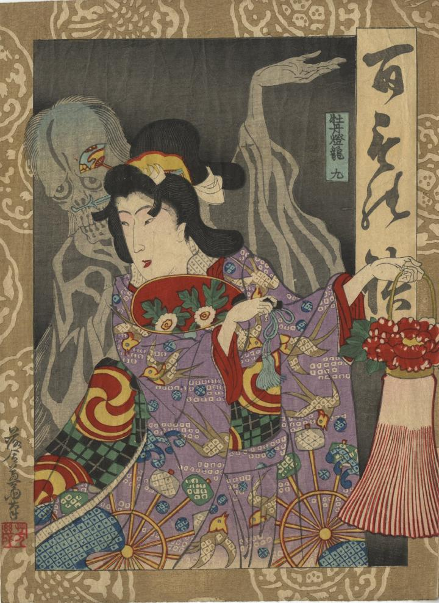

幽霊が女に化けている。牡丹の花をあしらった燈籠を左手に持っている。女の背後に、骸骨のような顔の幽霊が女と同様の顔の向きで、同様に左手を挙げている。ゆえに、幽霊が女に化けているということがわかる。
著作者：落合芳幾／出典：親書誌：U426_nichibunken_0418：百もの語 牡丹燈籠；ヒャクモノガタリ ボタンドウロウ／日付：2015／資源識別子：U426_nichibunken_0418_0001_0000
Copyright (c)2010- International Research Center for Japanese Studies, Kyoto, Japan. All rights reserved.